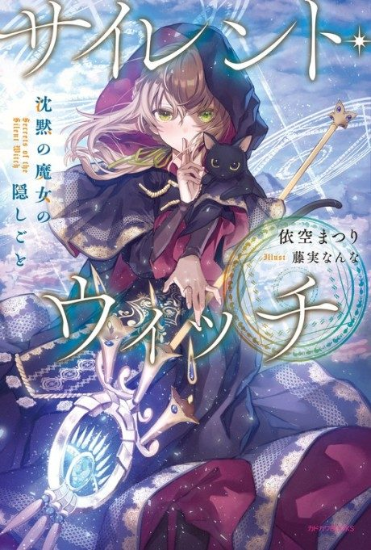

Secrets of the Silent Witch
サイレント・ウィッチ 沈黙の魔女の隠しごと
After the anime, read the light novel from Volume 4.
8.1AniList score
—Animeter, no votes yet
13episodes
Anime finished. Where does the story go next?
Start at Volume4
Season 1 adapts light novels 1-3; start at volume 4.
13ongoing
Secrets of the Silent WitchStart reading here